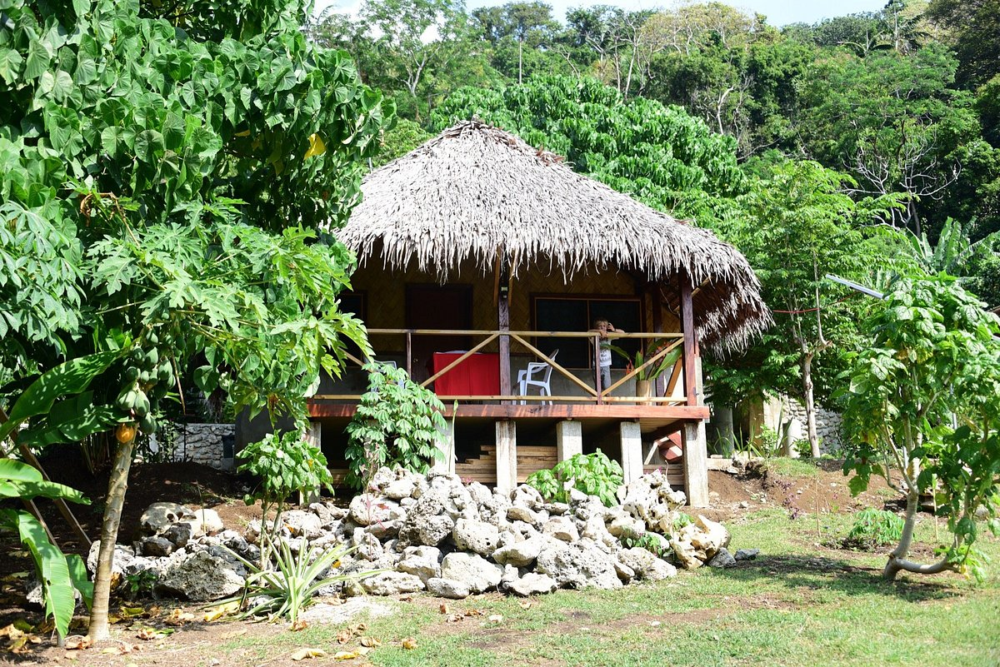
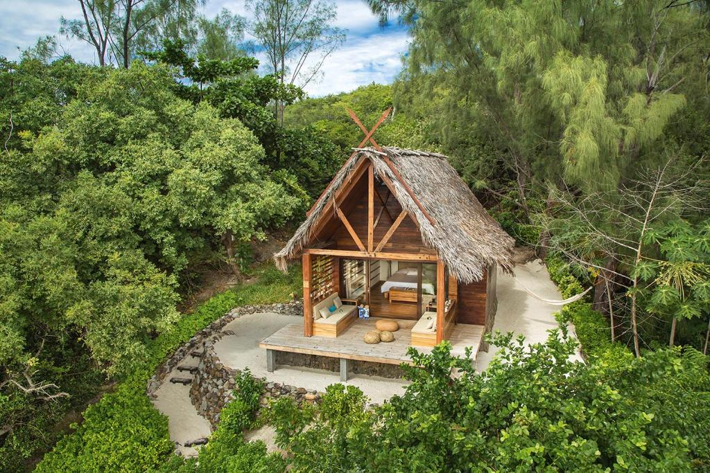

search
language
Experience Madagascar's diverse wonders - from lush rainforests and vanilla plantations to pristine island beaches and marine reserves
Embark on an unforgettable 12-day journey through Madagascar's most diverse ecosystems - from the lush rainforests of Andasibe and Masoala to the pristine beaches of Nosy Be. This carefully curated adventure offers an authentic experience showcasing Madagascar's unique biodiversity, cultural heritage, and stunning natural beauty.
Experience the magic of Madagascar as you encounter various lemur species in their natural rainforest habitat, explore vanilla plantations in Maroantsetra, discover the remote wilderness of Masoala National Park, and relax on the idyllic beaches of Nosy Be. Witness the incredible biodiversity of Madagascar's eastern rainforests and the turquoise waters of its Indian Ocean coastline.
Our expert local guides will share their extensive knowledge of Madagascar's ecosystems, cultural traditions, and wildlife behaviors, ensuring you gain deep insights into this island nation's wonders. With comfortable accommodations and seamless logistics, you can focus entirely on this breathtaking adventure across diverse regions.
This comprehensive journey is perfect for nature enthusiasts seeking diverse experiences, from rainforest hikes and lemur spotting to cultural encounters and beach relaxation. Discover the best of Madagascar's wildlife, landscapes, and coastal beauty in an immersive 12-day itinerary.
Activities: Airport transfer, hotel check-in, trip briefing
Afternoon
Upon your arrival at Ivato International Airport, you will be warmly welcomed by your English-speaking guide who will assist you with your luggage and transfer you to your hotel in Antananarivo. The journey offers your first glimpse of Madagascar's capital city as you travel from the airport to your accommodation.
Evening
After settling into your hotel, enjoy a comprehensive trip briefing with your guide. They will provide detailed information about the upcoming adventure, answer any questions you may have, and ensure you're well-prepared for the journey ahead. Enjoy dinner at your hotel or a nearby restaurant, resting after your international flight.


Distance/Time: Approx. 3-4 hours drive from Antananarivo to Andasibe
Morning
After breakfast, depart Antananarivo and drive eastwards towards Andasibe, traveling through the scenic eastern slopes of Madagascar's central highlands. The journey offers beautiful views of rice paddies, traditional villages, and rolling hills as you descend from the highlands toward the rainforest.
Afternoon
En route, stop at Mandraka to visit the Peyrieras Reserve (also known as Madagascar Exotic), a private reptile and insect farm where you can see various chameleons, geckos, frogs, and insects in a controlled environment. This is an excellent introduction to Madagascar's unique herpetofauna before entering the rainforest.
Evening
Arrive in Andasibe and visit VOIMMA Nature Reserve, a community-managed reserve where local villagers guide you through the forest. Take an introductory walk to spot your first lemurs in their natural habitat and listen for the iconic call of the Indri, Madagascar's largest lemur species. After dinner, enjoy a night walk to observe nocturnal animals like mouse lemurs, chameleons, and various insects.


Activities: Primary rainforest hiking, wildlife spotting
Full Day
Today is dedicated to exploring Mantadia National Park, part of the Andasibe-Mantadia protected area complex. This primary rainforest offers excellent hiking trails through pristine forest with abundant wildlife. The park is home to several lemur species including the Diademed Sifaka (one of Madagascar's most beautiful lemurs), Black and White Ruffed Lemur, and Common Brown Lemur.
As you hike through the lush vegetation, your guide will help you spot various bird species including the Madagascar Blue Pigeon, Velvet Asity, and numerous endemic vanga species. The forest is also rich in orchids, medicinal plants, and towering trees draped in moss and epiphytes. Enjoy a picnic lunch surrounded by the sounds of the rainforest.
What to Expect: Moderate hiking on forest trails, excellent lemur viewing opportunities, diverse birdwatching, and immersion in pristine primary rainforest.
Distance/Time: Approx. 3-4 hours drive back to Antananarivo
Morning
Enjoy a final morning in the Andasibe area with a hike in Analamazaotra National Park (also known as Andasibe National Park). Search for the famous Indri Indri, whose haunting calls echo through the forest at dawn. These black and white lemurs are the largest living lemurs and are known for their distinctive vocalizations that can be heard up to 3 kilometers away.
Visit Lemurs' Island at Vakona Private Reserve, where you can observe several semi-tame lemur species up close in a controlled environment. This island sanctuary provides excellent photographic opportunities and allows you to see lemurs from much closer than in the wild.
Afternoon
After lunch, begin your drive back to Antananarivo, enjoying the scenic landscapes of Madagascar's central highlands one last time. The journey offers final views of rice paddies, traditional villages, and rolling hills as you ascend back to the capital.
Evening
Arrive in Antananarivo and check into your hotel. Enjoy dinner and overnight stay in the capital city, preparing for your flight to northeastern Madagascar tomorrow.
Activities: Domestic flight, city tour, vanilla workshop visit
Morning
Transfer to Ivato Airport for your domestic flight to Maroantsetra, a town in northeastern Madagascar known as the gateway to Masoala National Park. The flight offers aerial views of Madagascar's diverse landscapes as you travel from the central highlands to the northeastern coast.
Afternoon
Upon arrival in Maroantsetra, meet your local guide and enjoy a city tour of this coastal town. Visit local vanilla workshops where you'll learn about Madagascar's famous vanilla production - the country is the world's largest producer of natural vanilla. See how vanilla beans are cultivated, processed, and prepared for export, and learn why Madagascar's vanilla is considered the finest in the world.
Evening
Rest of the day at leisure to explore Maroantsetra at your own pace. Note that most boat transfers to Masoala are done only in early morning due to sea conditions and wind patterns, so prepare for an early departure tomorrow.


Activities: Boat transfer, rainforest exploration, night walk
Morning
Early morning boat transfer from Maroantsetra to Masoala National Park. The journey by traditional boat takes you along the coastline and into the remote wilderness of the Masoala Peninsula. This UNESCO World Heritage Site is one of Madagascar's most biodiverse and least-visited protected areas.
Afternoon
Upon arrival at your lodge in Masoala, settle in and then begin your exploration of the rainforest. Masoala National Park protects one of the last remaining large stretches of primary rainforest in Madagascar and is home to numerous endemic species including the Red Ruffed Lemur, which is found only in this region.
Evening
After dinner, embark on a night walk through the forest to spot nocturnal animals. Look for various mouse lemur species, sportive lemurs, chameleons, frogs, and insects that become active after dark. The sounds of the rainforest at night create a completely different atmosphere from daytime exploration.

Activities: Beach relaxation, marine exploration, leisure time
Full Day
Today is at leisure to enjoy the wild and turquoise lagoon of Masoala's marine reserve. Masoala National Park is unique in combining terrestrial rainforest with marine protected areas, offering both forest and coastal experiences.
Options for today include relaxing on pristine beaches, snorkeling in crystal-clear waters to observe coral reefs and marine life, kayaking along the coastline, or taking guided walks along coastal trails. The marine reserve protects coral reefs, seagrass beds, and mangrove forests that are home to sea turtles, dolphins, and numerous fish species.
What to Expect: Pristine beaches, excellent snorkeling opportunities, coastal wildlife viewing, and relaxation in a remote wilderness setting.
Activities: Boat transfer, domestic flight
Morning
After breakfast, take a boat transfer back to Maroantsetra, enjoying final views of the Masoala Peninsula's stunning coastline. The return journey allows you to appreciate the remote beauty of this region one last time.
Afternoon
Transfer to Maroantsetra Airport for your flight back to Antananarivo. The domestic flight returns you to Madagascar's capital, crossing diverse landscapes from the northeastern rainforests back to the central highlands.
Evening
Upon arrival in Antananarivo, transfer to your hotel. Enjoy dinner and overnight stay in the capital city, preparing for your flight to the tropical island of Nosy Be tomorrow.
Activities: Domestic flight, island arrival, leisure time
Morning
Transfer to Ivato Airport for your domestic flight to Nosy Be, Madagascar's premier beach destination. The island is known as "Perfume Island" due to its fragrant ylang-ylang plantations and other spices.
Afternoon
Upon arrival at Fascene Airport on Nosy Be, transfer to your beach resort. The rest of the day is at leisure to enjoy the island's beautiful beaches, warm Indian Ocean waters, and relaxed atmosphere. Take a swim, walk along the shore, or simply relax and enjoy the tropical paradise.
Evening
Enjoy dinner at your resort, perhaps featuring fresh seafood caught locally. The island offers a perfect contrast to the rainforest adventures of the previous days.


Activities: Island excursion, sea turtle spotting, optional whale shark viewing
Full Day
Today enjoy an excursion to Nosy Sakatia, a small island near Nosy Be known for its excellent opportunities to spot sea turtles. The island's clear waters and coral reefs provide ideal conditions for observing these graceful marine creatures in their natural habitat.
For travelers visiting in October or November, there's also the possibility of encountering whale sharks - the world's largest fish. These gentle giants frequent the waters around Nosy Be during these months, offering a truly unforgettable wildlife experience (seasonal and subject to natural conditions).
Other options for today include snorkeling on coral reefs, visiting local fishing villages, or simply relaxing on the beautiful beaches of Nosy Be.
Activities: City tour, market visit, domestic flight
Morning
Enjoy a city tour of Hell-Ville (Andoany), the main town on Nosy Be. Visit the local market famous for spices including vanilla, pepper, cinnamon, and ylang-ylang. Learn about the island's history as a trading post and its cultural blend of Malagasy, African, Arab, and European influences.
Afternoon
Transfer to Fascene Airport for your flight back to Antananarivo. The domestic flight returns you to Madagascar's capital, offering aerial views of the island and coastline as you depart.
Evening
Upon arrival in Antananarivo, transfer to your hotel. Enjoy your final dinner in Madagascar, reflecting on the incredible experiences of rainforest adventures, cultural encounters, and beach relaxation over the past 11 days.
Activities: City tours, cooking class, departure transfer
Morning
Enjoy city tours of Antananarivo including visits to historical and cultural sites. Explore the renewed Rova of Antananarivo (Queen's Palace) which offers panoramic views over the city, or visit other landmarks that showcase Madagascar's royal history and colonial architecture.
Participate in a cooking class to learn how to prepare traditional Malagasy dishes. Under the guidance of a local chef, discover the flavors and techniques of Malagasy cuisine, perhaps preparing dishes like romazava (meat and leafy green stew), ravitoto (pork with crushed cassava leaves), or various seafood preparations.
Afternoon
Rest of the day at leisure until your transfer to Ivato International Airport for your flight homewards or continuation to another destination. Bid farewell to Madagascar with unforgettable memories of diverse landscapes, unique wildlife, and rich cultural experiences.
End of Itinerary
Compare prices across different group sizes and seasons
| Number of People | Mid-Range Package | Luxury Package |
|---|---|---|
| 2 People | $5,935 | $6,910 |
| 4 People | $5,020 | $5,995 |
| 6 People | $4,715 | $5,690 |
| 8 People | $5,020 | $5,995 |
| 10 People | $4,840 | $5,815 |
| 2 People | $5,500 | $6,385 |
| 4 People | $4,585 | $5,470 |
| 6 People | $4,280 | $5,165 |
| 8 People | $4,585 | $5,470 |
| 10 People | $4,400 | $5,290 |
Experience the wild like never before with our expertly crafted safaris